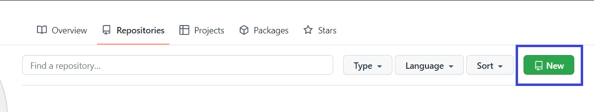
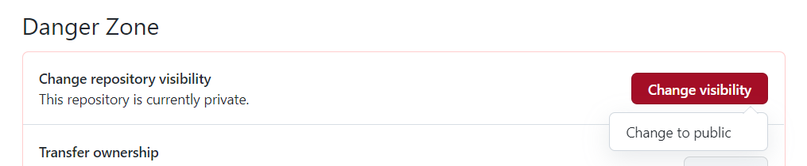
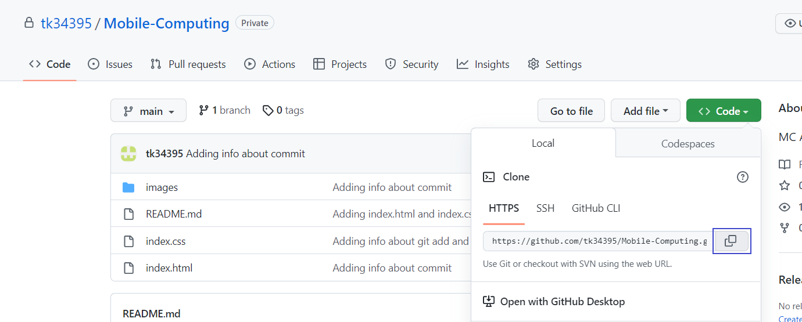
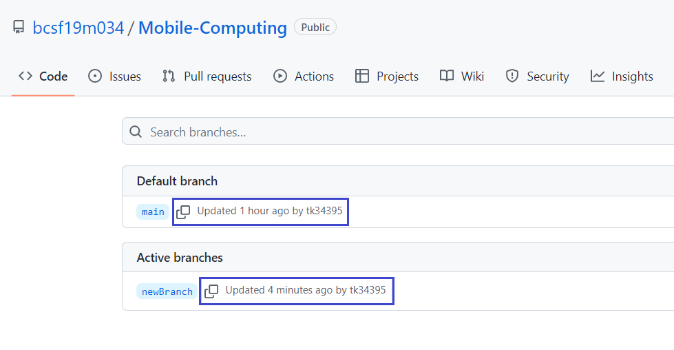
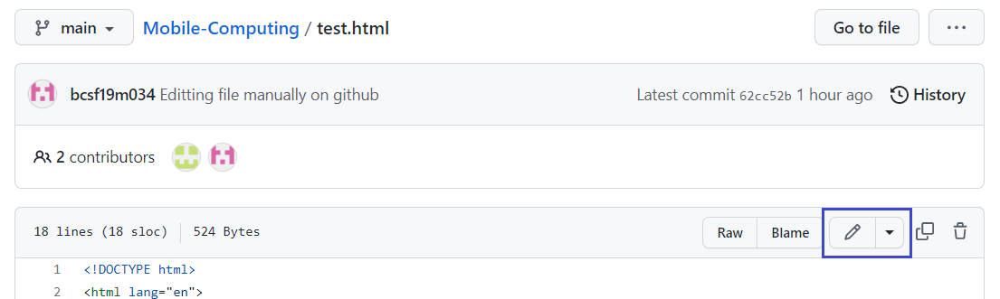

Table of Contents:
- What is Git and GitHub?
- How To Create GitHub Account.
- What are Repositories
- How to initialize, add, commit and check status of files on GitHub.
- Setting Remote URL and pushing Files to github.
- Renaming a file or folder.
- Deleting a file or folder.
- Cloning a Repository.
- Pulling a Repository from GitHub.
- Branching.
- Merge and Merge Conflict.
- Forking a Repository
- Making Website Live on GitHUB.
Git and GitHub
What is Git?
- Git is a version control system.
- Git helps you keep track of code changes.
- Git is used to collaborate on code.
What is GITHUB?
- GitHub is a code hosting platform for version control and collaboration. It lets you and others work together on projects from anywhere. This tutorial teaches you GitHub essentials like repositories, branches, commits, and pull requests.
- GitHub is an increasingly popular programming resource used for code sharing. It's a social networking site for programmers that many companies and organizations use to facilitate project management and collaboration.
How to create Account of GitHub
- Go to GitHub
- Click on SignUp button.
- Enter Required information.
- Click on create Account.
- Enter code sent on your email.
- Your Account will be created.

What are Repositories?
- A GitHub repository can be used to store development project.
- A GitHub repository keeps track of changes in file
- It can contain folders and any type of files (HTML, CSS, JavaScript, CPP, Documents, Data, Images).
- A GitHub repository should also include a licence file and a README file about the project.
- A GitHub repository can also be used to store ideas, or any resources that you want to share.
Creating Public Repository
- Click on your profile icon.
- Go to your Repositories.
- Click on New Button. 
- Enter Repository name and description.
- Select Public.
- Click on Create Repository.
- Public Repository will get created.


Creating Private Repository
- Click on your profile icon.
- Go to your Repositories.
- Click on New Button.
- Enter Repository name and description.
- Select Private.
- Click on Create Repository.
- Private Repository will get created.

How to Make Private Repository to Public Repository
- Open you Repository.
- Go to Settings.
- Click on New Button.
- Scroll to bottom till ‘‘Danger Zone’’..
- Click on Change Visibility.
- Click on Change to public. 
- Click on I want to make this repository public.
- Click on I have read and understand these effects
- Click on Make this repository public
- Repository will become public.


Cloning a Repository
What does it means?
Cloning a repository pulls down a full copy of all the repository data that GitHub has at that point in time, including all versions of every file and folder for the project. You can push your changes to the remote repository on GitHub.com, or pull other people's changes from GitHub.com.
Command: git clone url(url of public repository you want to clone)
Steps to clone a Repository:
- Go to any Public Repository.
- Click on Code.
- Copy the URL.
- Open the folder in terminal where you want to make Clone.
- Repository will get Cloned in your directory.


Cloning a Repository
What does it means?
Cloning a repository pulls down a full copy of all the repository data that GitHub has at that point in time, including all versions of every file and folder for the project. You can push your changes to the remote repository on GitHub.com, or pull other people's changes from GitHub.com.
Command: git clone url(url of public repository you want to clone)
Steps to clone a Repository:
- Go to any Public Repository.
- Click on Code.
- Copy the URL.
- Open the folder in terminal where you want to make Clone.
- Repository will get Cloned in your directory.
Initializing, Adding, Commit and check Status of files on GitHub
Creating Sample File:
- Create a file "index.html".
- Write basic HTML code in it.

Initializing Repository:
- First we initialize our repository.
- .git folder will get created in our directory which is hidden. You can view it by changing settings to display all files.
Command: git init

Checking git status:
- You can check git status by this command:
git status

Adding Files:
- Initially the file will be an untracked file.
- When we add the file it will go to the stagged area.
- We can add the files/directories by using following methods:
- By using name of file/folder:
- By using . symbol to add all files/folders:
- By using * symbol to add all files based on the specified extension:
Commmand : git add practice.html
Command : git add .
Command : git add *.html

Commiting added files:
- You can commit the files in two ways:
- Commits with a one-line message:
- It opens the editor to type a message:
git commit -m "Message"
git commit

Setting Remote URL:
- Set the remote url where your code will push.
- That URL could be your repository on GitHub, or another user's fork, or even on a completely different server. 
Command: git remote add origin REMOTE_URL

Pushing to online Repository:
- You have to specify branch where you want to push your files/folders.
- If you want to push in main branch type following command:
git push -u origin main

Deleting file/folder from repository.
- Use the following command to delete a file from repository
- This command delete the file from your disk folder but not from the remote one.
- To delete the file from the remote repository commit the changes and then push to remote repository.
- Now File from Remote Repository is also deleted.
rm index.html


Renaming file/folder from repository.
- Use the following command to rename a file/folder in repository
- This command rename the file from your disk folder but not from the remote one.
- To rename the file from the remote repository commit the changes and then push to remote repository.
- Now File from Remote Repository is also renamed.
mv oldNname newName


BRANCHING
What is Branching?
A branch in Git is simply a lightweight movable pointer to one of these commits. The default branch name in Git is master . As you start making commits, you're given a master branch that points to the last commit you made. Every time you commit, the master branch pointer moves forward automatically.- Branches allow you to work on different parts of a project without impacting the main branch.
- When the work is complete, a branch can be merged with the main project.
- You can even switch between branches and work on different projects without them interfering with each other.
How to Make a new Branch.
- Run the following Command On the terminal.
- Run the following command to see all branches.
- The * symbol will show the current branch in which you are currenty.
git branch branchname
git branch

Switching to other Branches.
- Following command is used to switch to the other branch.
- New branch will contain the same files as main Branch.
git checkout newBranch


Updating Files in New Branch.
- Checkout to new Branch.
- Update Data.
- Add and Commit changes and push to remote. All the changes will be commit to new branch not master branch.
- Main branch data will remain Same. 

Comparing Branches
- You can Compare 2 Branches by following command
git diff branch1..branch2

Deleting a Branch
- To delete a branch use the following command.
- You can not delete the branch in which you are currently. If you want to delete that first switch to any other branch.
git branch –D branchname

Merging
- We can merge two branches by using the following command.
- If you are in main branch, it will merge other branch to main branch
git merge branchname

Merge Conflict
What is Merge Conflict?
Merge conflicts occur when changes are made to the same line of a file, or when one person edits a file and another person deletes the same file.
Understanding Merge Conflict
- Create a new branch.
- Switch to new branch.
- Make changes in any file.
- Add and Commit changes.
- Now switch to main branch
- Make any change to same line you did in other branch.
- Add and Commit changes.
- Merge with newbranch.
- Merging failed because there is a conflict because a change occur on same line in both branches.
- Check git status.
- This confirms there is a conflict in index.html. So we need to fix that conflict. Open the Editor.
- Select option according to what you want to do.
- Now we can stage files and check the status:
- The conflict has been resolved and now we can use commit to finish merge.


Git add .
Git status


Pull From Github.
- Edit File From Github.
- Commit the Changes.

Fetch :
-
Fetch gets all the change history of a tracked branch or repository.
So, fetch updates your local git to see what changes have been made on GitHub.
- It shows that how many commits remote repository is ahead.
- Fetch the origin and check status.
git fetch origin
git status

- If we try to commit, it will also show to pull it.
You can pull changes by using following command:
git pull

- Now code in local git repository become updated with remote git repository.
git fetch origin
git status
git pull
FORK
What is meant by forking a repository?
A fork is a copy of a repository. This is useful when you want to contribute to someone else's project or start your own project based on theirs.
Fork is not a command in Git, but something offered in GitHub and other repository hosts.
- Login to your account.
- Go to some repository
- Click on Fork
- Then create a new fork
- Now click on create fork.
- Now the repository will be available to your account


Edit Files From Github Account.
- Go to your Repository on GitHub
- Click on the file you want to edit
- Click on Edit Icon. 
- After editing type a message and commit the changes or create a new branch for the changes to commit.

Make Website Live onGithub
Following are the steps to make website live on github:
- Open Project.
- Go to project settings.
- Go to pages
- Select the branch from here which you want to publish and click on save button
- After few minutes link will shown in settings where your page is live.